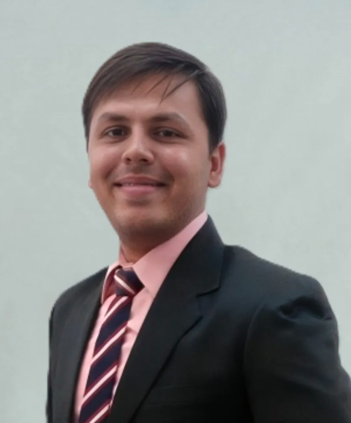

Acting CISO (Cybersecurity Officer)
GRC | ISO/IEC 27001 | Business Continuity | AI Governance | AI Automation
Berlin, Germany Email parthlakhalani14@gmail.com LinkedIn linkedin.com/in/parth-lakhalani Web parthlakhalani.github.io

Security and GRC leader with 10 years across Offensive Security, Digital Forensics, teaching and governance. As Acting CISO at a HealthTech AI company in Berlin, I run the ISO 27001 ISMS, Business Continuity (ISO 22301), cloud security and compliance for regulated medical software, and extend the programme into AI Governance. I also consult on GRC, build AI automation for GRC work, and lecture at BSBI Berlin.
Own GRC and the ISO 27001 ISMS for AI radiology platforms used across Europe. Lead Business Continuity, AI Governance, cloud security and compliance with GDPR and EU MDR. Led the company through ISO 27001 certification.
Help organisations with ISO 27001 readiness, AI Governance and Business Continuity, and build AI automation for GRC work.
Teach cybersecurity, GRC and AI Governance to international students, with hands-on, practice-led sessions.
Trained 100+ professionals in GRC, Ethical Hacking and Digital Forensics, and advised organisations on NIST and ISO 27000 compliance.
Taught 3,000+ students, supervised 15+ theses and led forensics research. From 2021, also ran university exams with a team of 70+.
Taught cybersecurity, Ethical Hacking and Digital Forensics, with Offensive Security and VAPT labs.
Trained in digital evidence, forensic ballistics and questioned documents.
AI in SecOps Bootcamp, LLM Security Red Team Bootcamp, AWS Cloud Foundation, ISO 27001:2022-Compliant Cybersecurity (PMI), Continuous Security Validation, ISO/IEC 20000-1, ICS/OT NIST 800-82, NHS Data Security and Protection, Cisco CCNP ENCOR